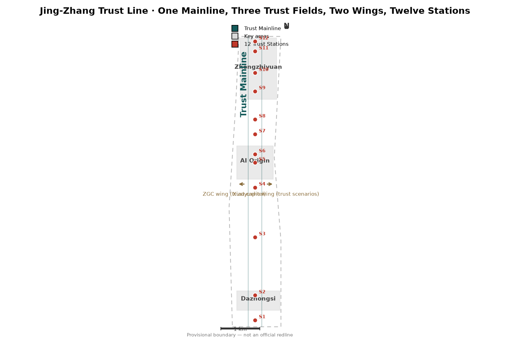
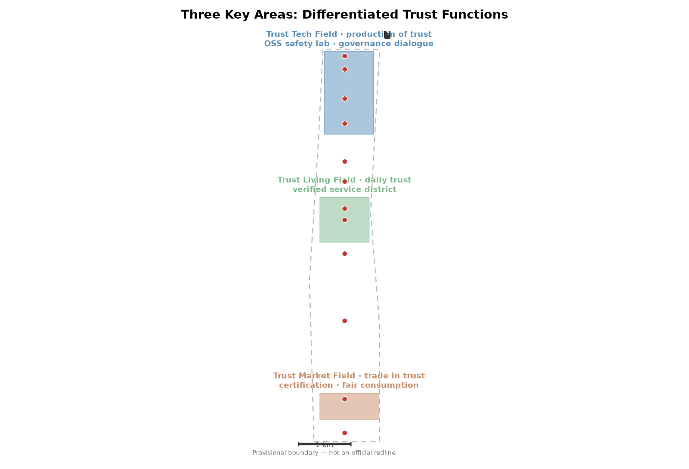
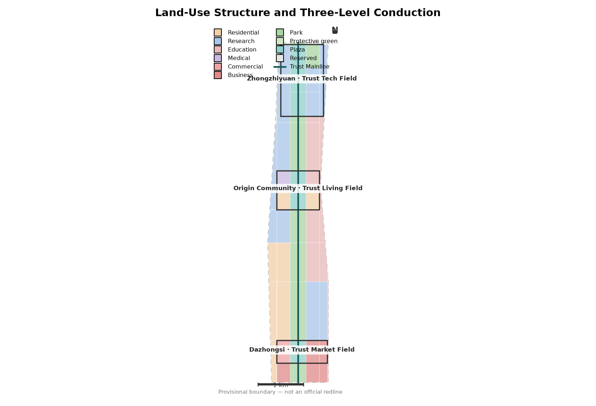
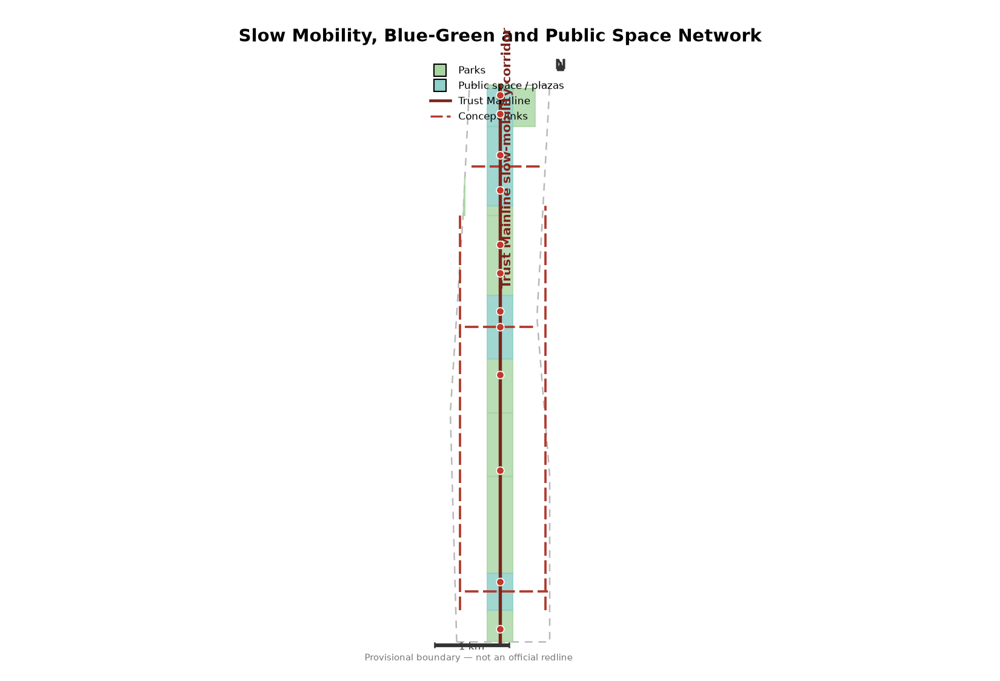
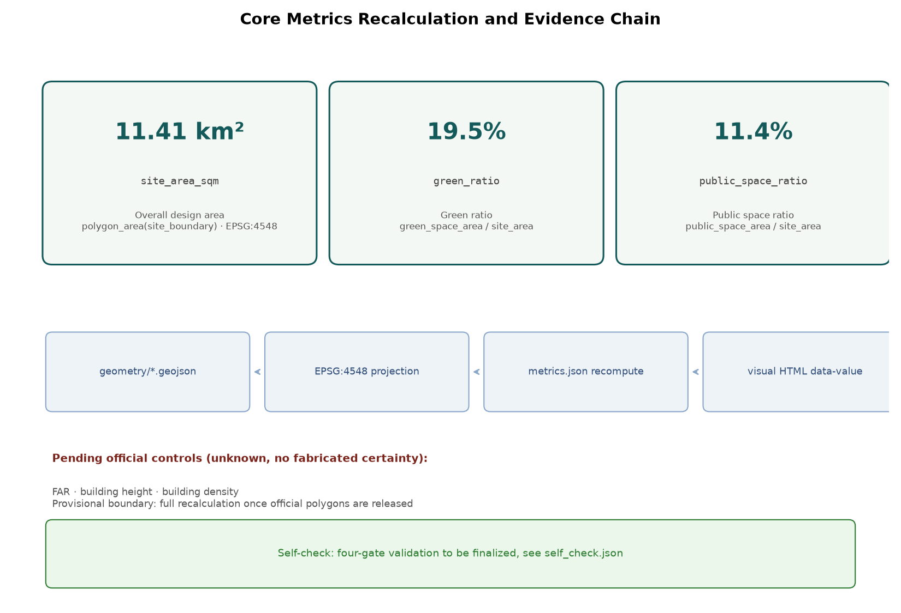

⚠ All boundaries are provisional constraints (no official precise redline is public); not an official redline, approval basis or precise-area basis. Full recalculation once official polygons are released.
Overview Map

Overall concept: Trust Mainline linking three fields — Trust Market (south) → Trust Living (middle) → Trust Tech (north); wings: ZGC tech-service wing / Xiaoyuehe scenario wing
Three-Level Scope
- Coordinated research area: ~43.6 km² (text four-boundaries per official announcement)
- Overall design area: ~11.4 km² (announced), submitted geometry recomputes 11.41 km² (provisional)
- Key areas: ~368.4 ha — Zhongzhiyuan 192.1 / Origin Community 104.3 / Dazhongsi 72.0 ha
Key Areas

Three key areas: differentiated trust functions — Zhongzhiyuan = production of trust · Origin Community = daily trust · Dazhongsi = trade in trust
Land Use

Land-use structure and three-level conduction — 66 land-use parcels fully covering the provisional boundary (EPSG:4548)
Mobility & Blue-Green

Slow mobility and blue-green public space
Buildings (concept volumes, not existing conditions)
- 80 concept footprints concentrated in the three key areas (confidence=low; not surveyed conditions)
- Footprint area 0.137 km² (design-model value)
- FAR / height / density: pending official controls (unknown; no fabricated certainty)
Renewal projects and phasing
- Near (2026-2028): Dazhongsi Trust Market Field
- Mid (2028-2031): Origin Community Trust Living Field
- Long (2031-2035): Zhongzhiyuan Trust Tech Field
- Policy (conceptual): trust credentials · open testfields · quarterly evidence disclosure
AI Scenarios
S1 Origin StationS2 Trust Market PlazaS3 Fair Consumption StationS4 GenAI Compliance ExperienceS5 Human-Takeover StationS6 AI Legal Advisory CabinS7 Accessible Trust StationS8 Data Trust StationS9 Algorithm Audit Open LabS10 Global AI Governance DialogueS11 Developer Oath PlazaS12 Agent Honor Wall
12 scenario cards (3 industry test scenarios) + 5 personas; each card binds location, users, runtime data, privacy boundary, human review, operator and risk.
Core Metrics
11.41 km²
site_area_sqm
Overall design area (provisional recompute)
19.5%
green_ratio
Green ratio = green_space / site_area
11.4%
public_space_ratio
Public-space ratio = public_space / site_area

Task Coverage
- agent.1 — Concept & naming/Logo
- agent.2 — Ecosystem & 5-8 cases
- agent.3 — Scenario cards/personas/tests
- agent.4 — Public space & landmarks
- agent.5 — Cultural narrative
- agent.6 — Events & long-term operation
- 1.3/1.4 — Announcement goals & scopes
- 1.5 — Announcement design tasks
All 22 compliance items (announcement 1.3/1.4/1.5 + agent.1–agent.6) mapped with evidence in compliance_matrix.json.
Self-Check Status
● self_check.json: four-gate validation to be finalized (format / spatial / visual / evidence)
Sources
- Official announcement (Haidian Branch, BCPNR, 2026-05-09)
- Agent open-call taskbook excerpt (user-provided cleared)
- provisional_boundaries.geojson (maintainer-derived from announcement text)
- Full provenance in sources.json and data/source_registry.json
Assumptions & Limits
- No official precise redline public: all boundaries provisional; full recalculation when released
- Regulatory controls missing: FAR/height/density unknown with recalculation triggers
- Concept volumes and phasing are design-model values, not surveyed or statutory
- Stations, landmarks and events are conceptual proposals for professional deepening